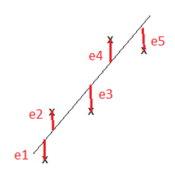
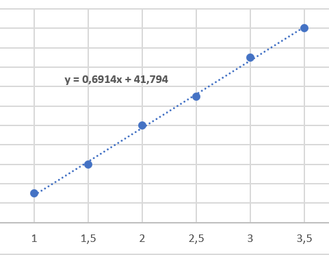
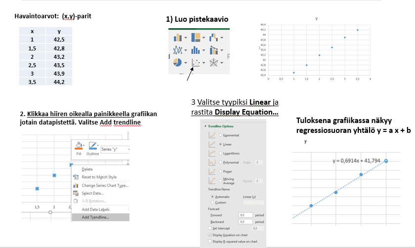
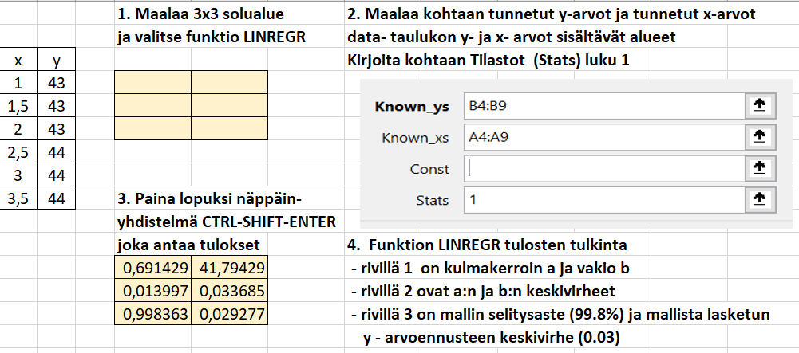
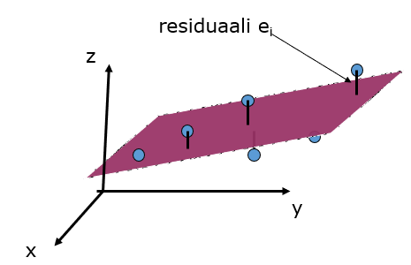
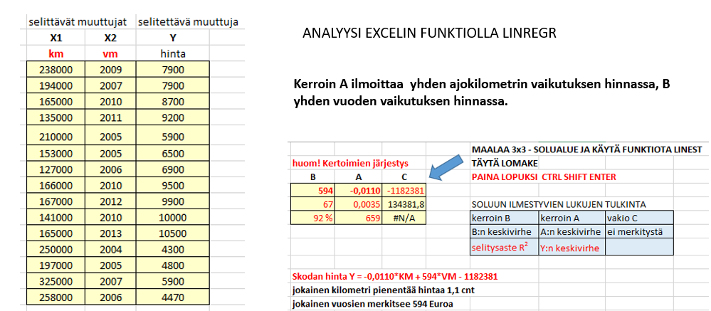
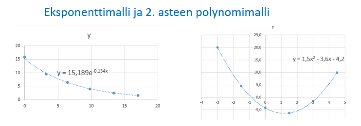

Regressioanalyysi
Contents
Regressioanalyysi¶
Regressioanalyysissä tutkitaan yhden tai useamman selittävän muuttujan vaikutusta selitettävään muuttujaan.
Analyysin tuloksena saadaan matemaattinen malli \(y = f(x_1,..., x_n)\), missä y on ns. selitettävä muuttuja (dependent variable) ja \(x_1,....,x_n\) ovat ns. selittäviä muuttujia (independent variables).
Yleisimmässä, ns. lineaarisessa regressiomallissa pyritään löytämään lineaarinen funktio
\(y = b_0 + b_1 x_1 +....+ b_n x_n\) , joka kuvaa muuttujan y riippuvuutta selittävistä muuttujista \(x_i\).
Lineaariseen regressioanalyysiin tarvittavat funktiot löytyvät hyvistä laskimista, sekä Excelistä.
Yhden muuttujan lineaarinen regressio - pienimmän neliösumman suora¶
Yhden muuttujan regressioanalyysissä (x,y) - pareja sisältävään mittausdataan pyritään sovittamaan suoran yhtälö y = a x + b siten, että suora mahdollisimman hyvin kuvaisi muuttujien x ja y välistä riippuvuutta.
Suoran sovitus tapahtuu määrittämällä kulmakerroin a ja vakio b siten, että havaittujen y-arvojen ja mallista laskettujen y - arvojen erotusten \(y_i - (a x_i + b)\) neliöiden summa on mahdollisimman pieni. Tästä periaatteesta johtuu nimitys pienimmän neliösumman suora
Esimerkki¶
Määritä regressiosuoran y = a x + b parametrit a ja b perustuen seuraavaan mittausdataan
x |
1.0 |
1.5 |
2.0 |
2.5 |
3.0 |
3.5 |
|---|---|---|---|---|---|---|
y |
42.5 |
42.8 |
43.2 |
43.5 |
43.9 |
44.2 |
Tapa1: (harvinainen, yleensä regressioanalyysi tehdään tilasto-ohjelmistolla tai Excelillä)
Muodostetaan ns. residuaalivektori e mallin antamien ja havaittujen y-arvojen erotuksista.
\(e = (a\cdot 1+b-42.5, a\cdot1.5+b-42.8, a\cdot2+b-43.2,a\cdot2.5+b-43.5, a\cdot3+b-43.9,a\cdot3.5+b-44.2)\)
Residuaalivektorin komponentit näkyvä ao. kuvassa pystyviivoina

Minimoidaan residuaalien neliösumma käyttäen WolframAlphan minimize komentoa.
\(\text{minimize } (a\cdot 1.0+ b-42.5)^2 + (a\cdot 1.5+ b-42.8)^2+ (a\cdot 2+ b-43.2)^2\)
\(+ (a\cdot 2.5+ b-43.8)^2+ (a\cdot 3+ b-43.9)^2+ (a\cdot 3.5+ b-44.2)^2\)
Tulos: kulmakerroin a = 0.6914 ja vakio b = 41.7943

Tapa2. Yhden muuttujan regressioanalyysi Excelillä - ohjeet
Mikäli parametrien a ja b arvot riittävät ilman virherajojen määritystä, on helpointa käyttää Excelin grafiikkaan > liittyvää Trendiviiva toimintoa.
Siinä havaintodatasta luodaan ensin pistekaavio, johon lisätään lineaarinen trendiviiva yhtälöineen ao. kuvasarjan mukaisesti. 
Mittaussarjaan perustuva regressioanalyysi on altis satunnaisuudesta otantavirheelle.
Satunnaisuuden lisäksi y:n arvojen vaihteluun voi olla muitakin selittäviä tekijöitä kuin muuttuja x.Parametrien satunnaiseen vaihteluun ja mallin hyvyyteen liittyviä tuloksia saadaan käyttämällä Excelin funktiota LINREGR, joka antaa mm. parametrien a ja b keskivirheet, sekä mallin selitysasteen R².

Monen muuttujan lineaarinen regressio ( väh. 2 selittävää muuttujaa)¶
Jos data koostuu pistekolmikoista \((x_1,x_2,y)\), missä y on selitettävä muuttuja ja \(x_1\) ja \(x_2\) selittäviä muuttujia, niin lineaarinen malli on muotoa \(y = a_1 x_1 + a_2 x_2 + b\). Geometrisesti malli edustaa tasoa 3D avaruudessa.
Mallin parametreina on kaksi kulmakerrointa \(a_1\) ja \(a_2\) sekä vakiotermi b.
Parametrien arvot määräytyvät siten, että residuaalien \(e_i = y_i – (ax_{1i} + bx_{2i} + c)\) neliösummalla on minimikohta.

Monen muuttujan regressioanalyysi Excelillä - esimerkki ja ohjeet
Taulukossa on nettiauto.com sivustolta tietoja Skoda Octavia -merkkisten vaihtoautojen hinnoista.
Selittäviä muuttujia on km-määrä ja vuosimalli.
Kuvasarja esittää regressioanalyysi Excel:n funktiota LINREGR käyttäen

Epälineaarisia regressiomalleja¶
Excelin grafiikan trendiviiva - toiminto sisältää lineaarisen mallin lisäksi muitakin yhden muuttujan regressiomalleja:
eksponenttimalli \(y = a e^{bx}\), logaritmimalli \(y = a \text{ ln}(x) + b\), polynomimallit asteluvuille 0 - 6, esim. \(y =a x^2 + b x + c \), potenssimalli \(y = a x^{b}\).
Excel-ohje:
Luo pistekaavio datasta
Klikkaa jotain datapistettä käyttäen hiiren oikeaa painiketta. Valitse Lisää Trendiviiva
Valitse haluamasi malli kuvagalleriasta
Rastita kohta Näytä kaava kaaviossa
Kuvissa eksponenttimallin ja 2. asteen polynomimallin sovitus datapisteisiin.

Epälineaarisissa malleissa ei voi käyttää LINREGR funktiota, eikä niistä siten ole saatavissa mallin parametrien keskivirheitä. Mallin selitysaste \(R^2\) sen sijaan saadaan näkyviin rastittamalla sitä vastaava optio trendiviiva -lomakkeessa.